Peripheral Artery Disease (PAD) is usually treated by aggressively managing the risk factors with lifestyle changes and medication. This includes quitting smoking, controlling blood pressure and cholesterol, controlling diabetes, and losing weight. In addition, an exercise program can significantly improve symptoms of PAD in many cases.
If PAD is causing serious symptoms or is disabling, further treatments such as balloon angioplasty, stent placement, or surgical bypass can be very effective in improving the blood flow to the affected leg.